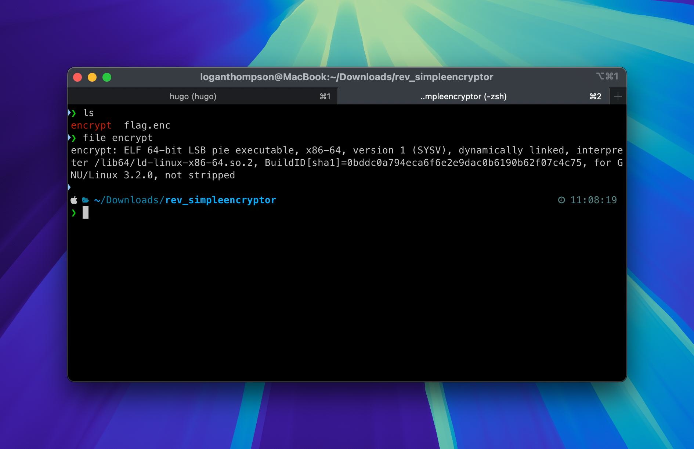
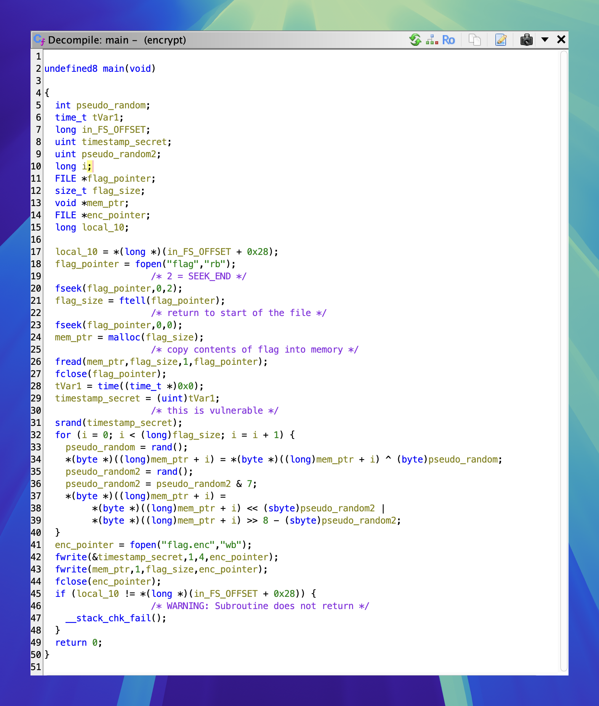
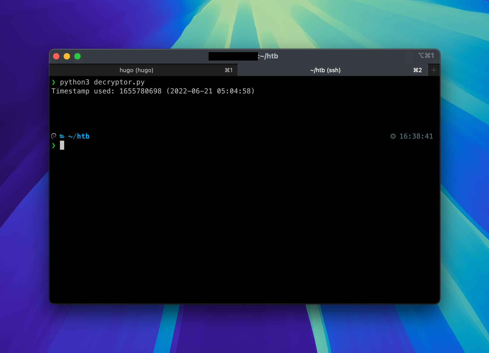
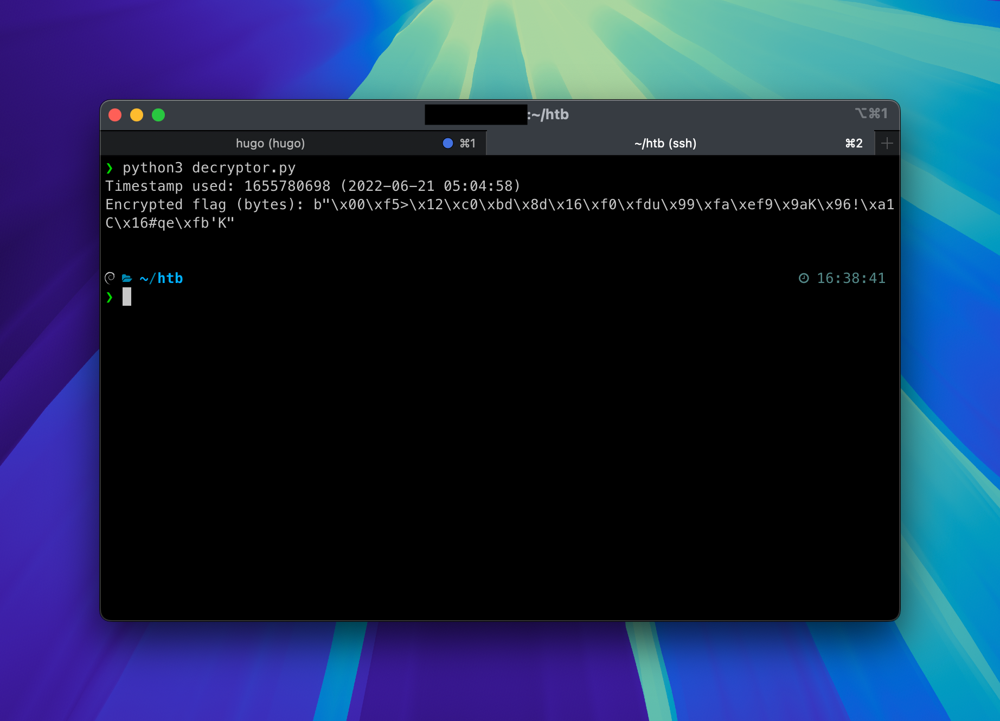
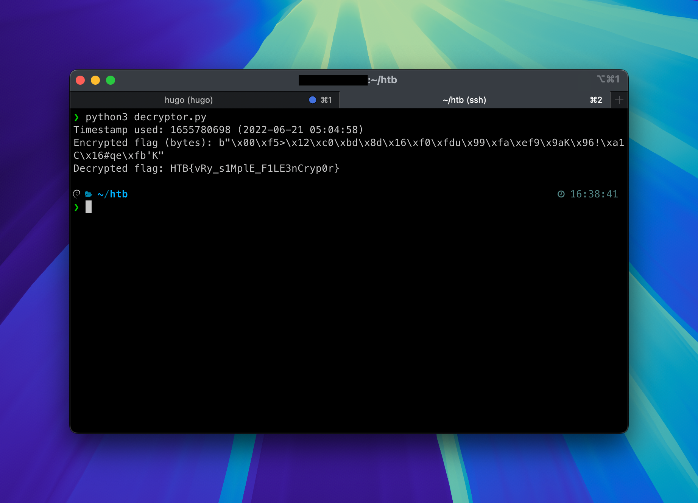

Type: Challenge
Category: Reversing
Difficulty: Very Easy
Solves: 3655
In this post we will be looking at a very simple encryptor and how to break it!
0x1 - RECON
Before we begin reversing the encryptor we have to see what we are dealing with.
Identifying the file type

A quick call to file reveals that the encrypt file is a 64Bit Linux executable.
Now unfortunately that won’t run natively on my M3 MacBook Pro.
But for now we don’t yet know if we have to run this file - chances are we can simply reverse engineer the file and build a decryptor without ever running it.
Strings
 Calling
Calling strings reveals some interesting references:
srand
fopen
ftell
time
This is all the recon I will do for now, time to load the file with Ghidra!
0x2 REVERSE

This is what we are greeted with when loading encrypt with Ghidra and decompiling the main function.
As you can see some of the variables have already been renamed and comments were added by me.
Dont worry if you can’t make anything of it. Lets break it down.
Reading the flag
flag_pointer = fopen("flag","rb");
The encryptor first calls the function fopen which takes two arguments filename and mode. Looking at the function call the first argument is obvious, the file that the encryptor reads is called flag but the second argument might not be so obvious at first. The file flag is opened with the mode rb where r stands for read and b for binary – in simple terms: “read the file as binary”. This function will return a pointer in memory where the file is stored and stores it in a variable, which I called file_pointer.
fseek(flag_pointer,0,2);
Next the encryptor calls the function fseek which takes three arguments stream(which is a pointer to a file) offset and origin.
In short this function sets the position indicator of a file stream. Imagine if you have opened a textfile with your favorite editor. The curser position in your editor is the same as the position indicator of a file stream. The third argument of fseek is origin and defines where the cursor should be set. In this case the number 2 is the integer representation of the C++ constant SEEK_END, which means that the cursor is placed at the end of the file. The second argument offset tells the function how many bytes the cursor should move from origin. So since origin is the end of the file and offset is 0 the cursor is supposed to remain at the end of the file.
TL;DR: The cursor in our file stream file_pointer is now at the end of the file.
flag_size = ftell(flag_pointer);
Next the encryptor calls the function ftell which takes only one argument stream (in our case: file_pointer). When the stream is a binary stream (which it is, since the encryptor opened it with the flags rb) the function returns the numbers of bytes the position indicator has moved from the beginning of the file. This is the method how the encryptor reads how big the file is, thats why I named the return value flag_size.
fseek(flag_pointer,0,0);
mem_ptr = malloc(flag_size);
Now the encryptor moves the position indicator back to the beginning of the file (Note: This is because origin is now 0 too which translates to SEEK_SET).
Afterwards the encryptor allocates space in memory using malloc. The size it allocates is the same size as the flag. The return value will be a pointer to the allocated space in memory.
fread(mem_ptr,flag_size,1,flag_pointer);
fclose(flag_pointer);
To finish reading the flag the encryptor utilizes fread which takes four arguments ptr, size, count and stream. The first argument ptr tells the function where the read content should be saved. In our case thats the memory the encryptor has just allocated for us. Next size tells the function how many bytes should be read. The third parameter count tells the function how many elements we are dealing with. Each element has a size of the previous argument size. In our case we are dealing with flag_size * 1 bytes that should be read – in simple terms: read the flag exactly once. The last argument stream tells the function where we want to read from.
Finally the stream to the flag file is closed via fclose.
TL;DR: Read the flag and save it in memory.
Encryption time!
tVar1 = time((time_t *)0x0);
timestamp_seed = (uint)tVar1;
srand(timestamp_seed);
It is now time to look at how the encryption actually works, so we can make a plan on how to decrypt the encrypted flag within the challenge files. Firstly the encryptor calls time which takes exactly one argument time (which is a pointer to time_t). Normaly the function would take a specific time and date, but in our case the decompiler shows 0x0 which essentially is a NULL-Pointer. This means that the argument is not used. Because of this the function will return the seconds passed since 00:00, Jan 1 1970 UTC. The returned seconds are then saved in a variable I called timestamp_seed.
Next the function calls srand which takes exactly one argument seed. As we can see in Ghidra’s decompiler, the encryptor passes the received timestamp as seed. It is important to know, that srand initializes a pseudo-number-generator. After that we could call rand() a number of times to receive different random numbers.If we know the value of the seed we can always generate the same numbers on almost any machine, in the same order.
This will be the part we will try to exploit in the future! 😈
for (i = 0; i < (long)flag_size; i = i + 1) {
pseudo_random = rand();
*(byte *)((long)mem_ptr + i) = *(byte *)((long)mem_ptr + i) ^ (byte)pseudo_random;
pseudo_random2 = rand();
pseudo_random2 = pseudo_random2 & 7;
*(byte *)((long)mem_ptr + i) =
*(byte *)((long)mem_ptr + i) << (sbyte)pseudo_random2 |
*(byte *)((long)mem_ptr + i) >> 8 - (sbyte)pseudo_random2;
}
This is where the fun stuff is happening, so let’s look closely what happens.
- The encryptor runs a loop starting at 0 and counts up until it reaches the size of the original flag. The current count is stored in
i. - A supposedly random number is generated via rand and stored in what I called
pseudo_random - It reads the n-th byte of the flag it copied into memory (it does this by doing
mem_ptr + i. So ifi = 0it reads the first byte,i = 1the second and so on). The read byte is then XORed with the first random number generated. - A second supposedly random number is generated via rand.
- The second generated number is compared with the number 7 using Bitwise AND the result will be saved in
pseudo_random2again. - The encrypted bytes get saved in a three step process
- The previously with XOR encrypted bytes are bitshifted left by the number stored in
pseudo_random2 - The result of the bitshift is then being compared trough Bitwise OR with yet another bitshift calculation. This time the bits are shifted to the right by
8 - pseudo_random2positions.
- The previously with XOR encrypted bytes are bitshifted left by the number stored in
enc_pointer = fopen("flag.enc","wb");
fwrite(×tamp_seed,1,4,enc_pointer);
fwrite(mem_ptr,1,flag_size,enc_pointer);
fclose(enc_pointer)
Finally the encrypted bytes are saved to flag.enc.
The encryptor utilizes fopen once again, this time using the filename flag.enc and the mode wb which unlike above stands for “write bytes”, receiving yet again a pointer to a file in memory (Note if the file doesn’t exist, it will be created on disk).
Next we see two calls to fwrite which takes four arguments ptr, size, count, stream just like fread. The encryptor writes the timestamp_seed to the first four bytes (size * count = 1 * 4) of flag.enc. With the second call to fwrite the encryptor writes the encrypted bytes stored in mem_ptr to the encrypted file. Finally the handle to the encrypted flag file flag.enc is closed.
That’s it. That’s all that the decryptor does.
0x3 DECRYPT
If you understood every step and mathematical operation listed in Encryption time! you might have an idea on how we could be able to decrypt the file.
Firstly we need to control the timestamp_seed and make sure it’s the same as during the encryption, so we can generate the same “random” numbers. Luckily the timestamp was written to the first 4 bytes of the encrypted flag file flag.enc so let’s extract it using python!
from datetime import datetime
with open('flag.enc', 'rb') as f:
timestamp = int.from_bytes(f.read(4), byteorder='little')
print(f'Timestamp used: {timestamp} ({datetime.fromtimestamp(timestamp)})')

As we can see, we have sucessfully read the timestamp that was saved in flag.enc and we now know that the flag was encrypted on 05:04:58, June 1st, 2022.
Next it’s time to read the remaining data by moving the cursor of the file 4 bytes ahead since the first 4 bytes are occupied by the timestamp.
with open('flag.enc', 'rb') as f:
timestamp = int.from_bytes(f.read(4), byteorder='little')
# Move after timestamp
f.seek(4)
encrypted_flag = f.read()
print(f'Timestamp used: {timestamp} ({datetime.fromtimestamp(timestamp)})')
print(f'Encrypted flag (bytes): {encrypted_flag}')

We have successfully read the encrypted bytes. But we don’t know if we have read correctly, until we start the decryption process so let’s go.
If you have understood the mathematical operators the encryptor used from the previous chapter, you might know that all we have to do is repeat all steps but in reverse and inverted. So if bits were right shifted, we shift them left and vice versa. To revert the XOR operation we simply take the byte and XOR it with the same value again!
from ctypes import CDLL, c_uint
# We need this in order to use the srand library provided by the C-Language
# and not by python since they are different and wont result in the same values used by the encryptor.
libc = CDLL('libc.so.6')
# Initialize the pseudo-random generator with the timestamp
libc.srand(c_uint(timestamp))
decrypted = bytearray()
for byte in bytearray(encrypted_flag):
# Generating the same "random" numbers as the encryptor
# Now that wouldn't make the generated numbers truly random, would it?
pseudo_random = libc.rand() & 0xFF # & 0xFF makes sure that pseudo_random is exactly 1 byte long
pseudo_random_2 = libc.rand() & 7
# Encryptor: *(byte *)((long)mem_ptr + i) << (sbyte)pseudo_random2 | *(byte *)((long)mem_ptr + i) >> 8 - (sbyte)pseudo_random2;
# As you can see we invert the shifting. left to right and right to left.
tmp = (byte >> pseudo_random_2) | (byte << 8 - pseudo_random_2)
# again make sure that we have exactly one byte
tmp &= 0xFF
# XOR the encrypted byte with the pseudo_random again to decrypt the byte
tmp ^= pseudo_random
decrypted.append(tmp)
print(f'Decrypted flag: {decrypted.decode("utf-8")}')

And that’s it! We have sucessfully decrypted the flag by reverting all the steps from the encryptor. 🥳
Full Code:
from ctypes import CDLL, c_uint
from datetime import datetime
with open('flag.enc', 'rb') as f:
timestamp = int.from_bytes(f.read(4), byteorder='little')
# Move after timestamp
f.seek(4)
encrypted_flag = f.read()
print(f'Timestamp used: {timestamp} ({datetime.fromtimestamp(timestamp)})')
print(f'Encrypted flag (bytes): {encrypted_flag}')
libc = CDLL('libc.so.6')
libc.srand(c_uint(timestamp))
decrypted = bytearray()
for byte in bytearray(encrypted_flag):
pseudo_random = libc.rand() & 0xFF
pseudo_random_2 = libc.rand() & 7
tmp = ((byte >> pseudo_random_2) | (byte << 8 - pseudo_random_2)) & 0xFF
tmp ^= pseudo_random
decrypted.append(tmp)
print(f'Decrypted flag: {decrypted.decode("utf-8")}')
All in all I would rate this challenge with Easy instead of Very Easy since it requires some prior knowledge to bitwise operators.
That’s all for now, hopefully you’ll join me for the next challenge soon! :)